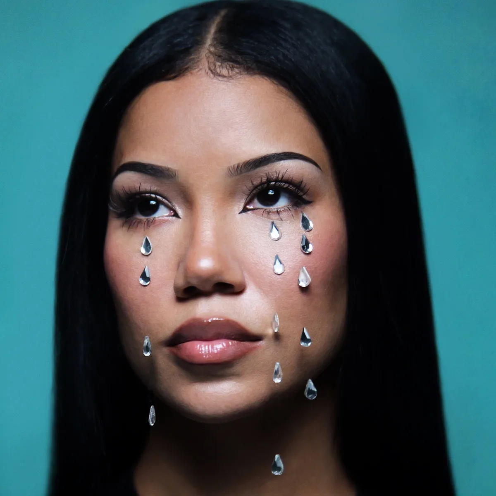

R&BSep 12, 2026
Crystal Tears on the Westside
Six years after Chilombo, Jhené Aiko finishes Westside Whimsy the way she started — mixtape stubbornness, Fisticuffs in the booth, and a love letter to a coast that burned.
The cover is a close-up on teal. Crystal tears glued under both eyes like she decided grief should catch the light. Not a soft-focus magazine face. A face that finished something hard and still looks straight at you.
Westside Whimsy arrived yesterday — September 11, 2026 — through Def Jam and ArtClub. Twenty tracks. First full album since Chilombo in March 2020. Six years is a long silence in a streaming feed that pretends silence never happened. On Threads she put the silence in plain language: every time she tried to lock in, life knocked her on her ass. She finished anyway. Love you. That is not press-kit poetry. That is a woman telling you the album almost did not exist.
Night Shift is not here for the headline guest list. The underground already knew her before the chart knew how to spell Chilombo.
Start where she actually starts. Early 2000s: Epic through Chris Stokes’ TUG machine, B2K adjacent, a teen single called “No L.O.V.E.,” an album titled My Name Is Jhené that never came out. Nearly two hundred unreleased songs and a label that could not hold her. She asked to be released. She went to school. She had a daughter — Namiko Love, named after a Thich Nhat Hanh story about the wave and the water — and when she came back she came back on her own terms.
March 16, 2011: Sailing Soul(s). Self-released mixtape. Mostly Fisticuffs. Written by her. Weed-haze beats, soft focus, the kind of R&B that moved in the same underground year The Weeknd was redrawing the map — not as a clone of that map, as her own weather. Drake, Miguel, Kendrick, Ab-Soul, jacked verses in true mixtape fashion. Fact Magazine caught her then calling it easy listening with a John Mayer songwriting crush, which is how underground people sometimes refuse the genre cage. No I.D. heard it. December 2011 she signed to his ARTium imprint through Def Jam. That is the real pivot: a mixtape that forced the major to meet her where she already was.
Sail Out in 2013. Souled Out in 2014. Trip in 2017. Chilombo in 2020 — platinum, healing-language R&B that became a private ritual for people who do not always admit they need a ritual. In 2021 she put Sailing Soul(s) on streaming like a receipt. Between albums she kept feeding the floor that never left: “Calm & Patient,” “Alive & Well,” “Sun/Son,” “Guidance,” the long 2025 mantra “I Am Not Afraid,” then “Break,” which turned out to be the first public door into Westside Whimsy. The underground version of a career is not the gap between album cycles. It is the work you do while the cycle pretends you are gone.
Westside Whimsy is the California record she has been talking about for months. ’90s music. West Coast car culture. Surfing. Beach. Road trips. Laid back until it is not. In a Complex conversation she called California magical and said she has been doing those drives for years. The tracklist walks that map without needing a tourist brochure: “Beach Boy,” “Neighbors” with Larry June, “Golden Coast” with OHMA at the end. Ab-Soul on “Love Bomb” — the same Ab-Soul who has been in her orbit since the Sailing Soul(s) / TDE-adjacent years — lands like continuity, not a flex. Tyga shows up on “Like, Whatever.” Kendrick is on “So Good,” deep in the album, a reunion after “Stay Ready (What a Life)” and the even earlier Overly Dedicated cut. Fine. Put the reunion on the shelf for a minute. The booth that matters for this story is still Fisticuffs and Lejkeys on songs like “Wild Cat(s),” “Ghost,” “Love Bomb,” “You” — the same producers who helped invent her first language. That is underground muscle memory wearing a Def Jam barcode.
Listen to where she is alone. Neon Music pointed at “Ghost,” “You,” “He Belongs,” “Don’t Be That Guy,” “Lullaby,” “Nami’s Haiku” as the rooms where the album clears space around her voice. Rated R&B caught her on “Ghost” stuck in a loop, singing that the fight is between her and herself — she does not need help, she needs herself. “He Belongs” does not flinch: he belongs to the streets, to every woman he meets. Mid-album the temperature changes. “Neighbors” with Larry June thanks a favorite neighbor like a soft beginning after a hard chapter. That is the arc people who actually live with heartbreak recognize: scorched earth, then a porch light.
Twenty tracks is long. Some reviews already said so. Night Shift will say the quieter truth: she has always made long records for people who stay in the car. The underground never asked her to be a singles machine. The underground asked her to finish the sentence.
Then the closer. “Golden Coast,” with OHMA. Rated R&B heard it as a love letter to Los Angeles after the 2025 wildfires that also took her home. She still thinks the city is beautiful even though the golden coast is filled with ashes. She does not think people know how deep the spirit is flowing through the canyons. That is not tourism. That is a woman whose house burned telling the landscape she will not leave it in the ash. If you have ever loved a room that got raided, a warehouse that lost its paper, a coast that went orange for a week, you already understand the register. Crystal tears on the cover. Ash in the last song. The album holds both without apologizing.
Club Copy’s floor is house, jungle, instrumental hip-hop — Pacific Northwest nights that still believe in the underground as a practice, not a brand. Jhené Aiko’s lane is not our BPM. It is our stubbornness. Mixtape first. Ask to be released. Write the songs yourself. Keep the same producers when the budget gets bigger. Put the old tape on streaming so the kids can hear where you started. Finish the album when life keeps knocking you down. Put gems under your eyes and call it a cover.
Westside Whimsy is out. Stream it like you mean the whole thing, not the one track the algorithm will try to make the whole story. Start at “Wild Cat(s).” Stay for “Ghost.” Stay for “Nami’s Haiku.” Stay until the coast is golden and ash at the same time. That is the underground habit: you do not leave early just because a bigger name shows up in the middle.
She finished. The tears are crystal. The coast is still hers.